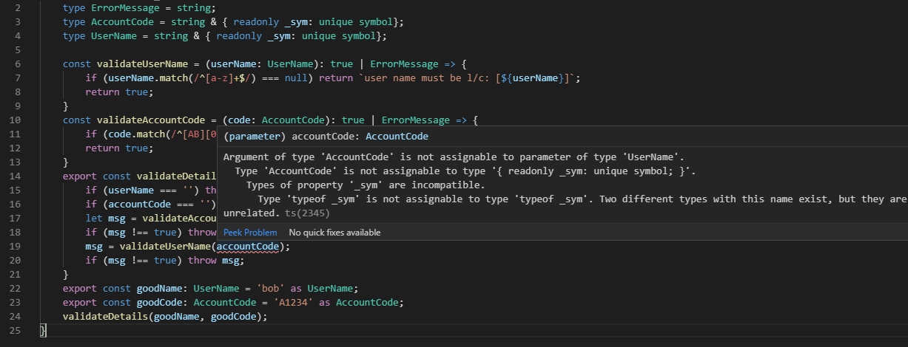

# Nominal Types in TypeScript --- ## Here is some code <img src="bug.png" width="97%" /> ### Can you spot the bug? ### Is the IDE helping? --- ### In Java I would create classes <img src="java.png" width="100%" /> <img src="javac.png" width="75%" /> --- ### I can do the same thing in C# # <img src="csharp.png" width="90%" /> --- ### and C++ <img src="cpp.png" width="97%" /> --- ### but what about TypeScript ? #### no error --- ### Why no error ? TypeScript is structurally typed ```js type Thing1 = { x: number; y: number; } ``` is the same type as ```js type Thing2 = { x: number; y: number; } ``` --- We can solve this problem using Symbols and Type Intersections --- ## Symbols blah blah blah --- Read more at https://codeburst.io/a-practical-guide-to-es6-symbol-3fc90117c7ac --- ## Type Intersections blah blah blah --- <img src="type_intersection.png" width="97%" /> Read more at https://www.typescriptlang.org/docs/handbook/advanced-types.html#intersection-types --- <img src="venn.png" width="90%" /> --- ### Using this technique --- ### Even Simpler  --- Read this book <img src="boris.jpg" width="40%" /> Find the code and this presentation at https://github.com/typescriptbob/nominal_types or follow me on twitter @typescriptbob